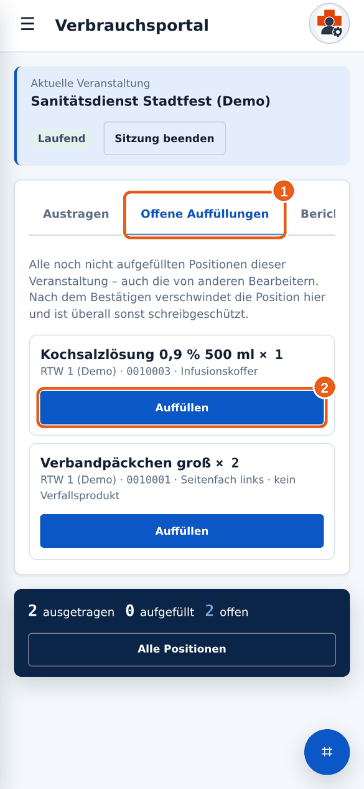
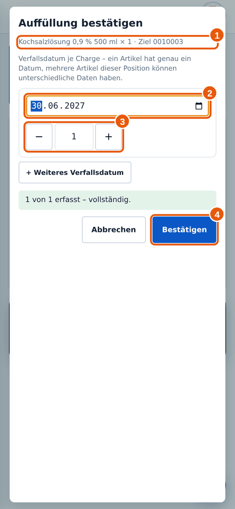
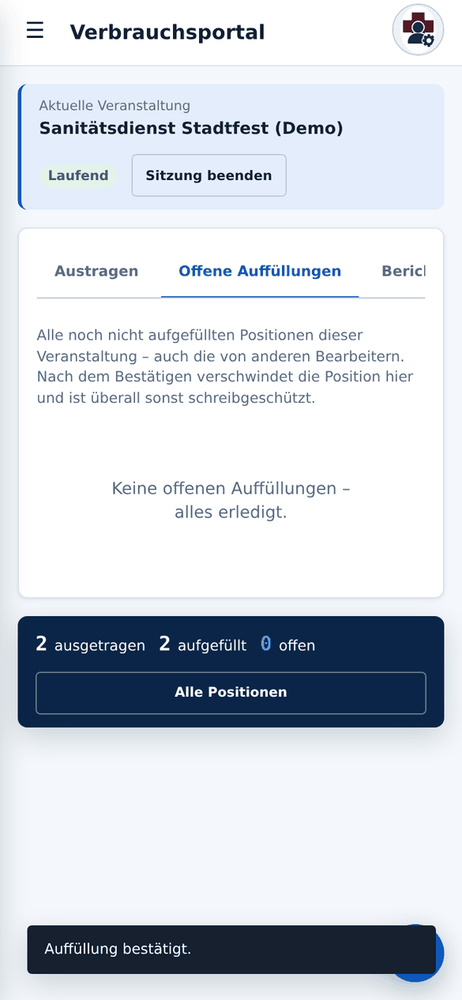

Anleitung 2.5
2.5Material auffüllen
Wann brauchst du das? Du hast verbrauchtes Material wieder in das Fahrzeug, den Rucksack oder den Koffer gelegt.
Kurz gesagtReiter Offene Auffüllungen → bei der Position auf Auffüllen tippen. Bei Produkten mit Verfallsdatum trägst du Datum und Menge ein, sonst bestätigst du nur.
✔Das brauchst du vorher
- Das Material ist wirklich schon aufgefüllt. Bestätige erst, wenn es physisch da ist.
- Bei Produkten mit Verfallsdatum: Die Packungen liegen vor dir, damit du das Datum ablesen kannst.
→So geht’s
- Öffne das Verbrauchsportal und wähle deine Veranstaltung. Tippe auf den Reiter Offene Auffüllungen 1.

1 Reiter, 2 Auffüllen. Hier siehst du auch Positionen anderer Personen. - Suche die Position, die du aufgefüllt hast, und tippe auf Auffüllen 2. Steht unter der Position „kein Verfallsprodukt“, ist es ein Produkt ohne Verfallsdatum (Fall 1). Sonst ist es ein Produkt mit Verfallsdatum (Fall 2).
Fall 1: Produkt ohne Verfallsdatum
- Es erscheint eine Rückfrage, ob die Position als aufgefüllt markiert werden soll. Bestätige mit OK. Dabei musst du nichts eintragen.
Fall 2: Produkt mit Verfallsdatum
- Der Dialog Auffüllung bestätigen öffnet sich. Oben bei 1 siehst du Produkt, Menge und Ziel.

1 Produkt und Menge, 2 Verfallsdatum, 3 Menge dieser Charge, 4 Bestätigen. - Trage bei 2 das Verfallsdatum ein, das auf der Packung steht. Bei 3 steht die Menge mit diesem Datum.
- Haben nicht alle Packungen dasselbe Datum? Tippe auf + Weiteres Verfallsdatum und trage das nächste Datum samt Menge ein. Die Summe muss genau zur aufzufüllenden Menge passen. Darunter erscheint „vollständig“, wenn alles stimmt.
- Tippe auf Bestätigen 4.
- Die Position verschwindet aus der Liste. Sind alle erledigt, steht dort „Keine offenen Auffüllungen – alles erledigt.“

Alles aufgefüllt.
Danach ist der Eintrag gesperrt
Nach dem Bestätigen kannst du den Eintrag nicht mehr ändern. Prüfe Datum und Menge vorher in Ruhe.
Nur Monat und Jahr auf der Packung?
Milan verlangt ein volles Datum. Steht auf der Packung nur Monat und Jahr, richte dich nach der Regel deiner Organisation und frage im Zweifel deinen Materialwart.
Die Summe stimmt nicht, ich kann nicht bestätigen.
Die Mengen aller Zeilen zusammen müssen genau der aufzufüllenden Menge entsprechen. Passe die Zahlen an oder füge eine Zeile hinzu.
Ich habe versehentlich falsch bestätigt.
Das kann nur die Administration zurücknehmen. Melde dich beim Materialwart.
Ich sehe die Option „Chargenerfassung übergehen“.
Diese Option ist nur für Materialwarte gedacht. Trage bitte immer die Verfallsdaten ein, wenn du sie hast.